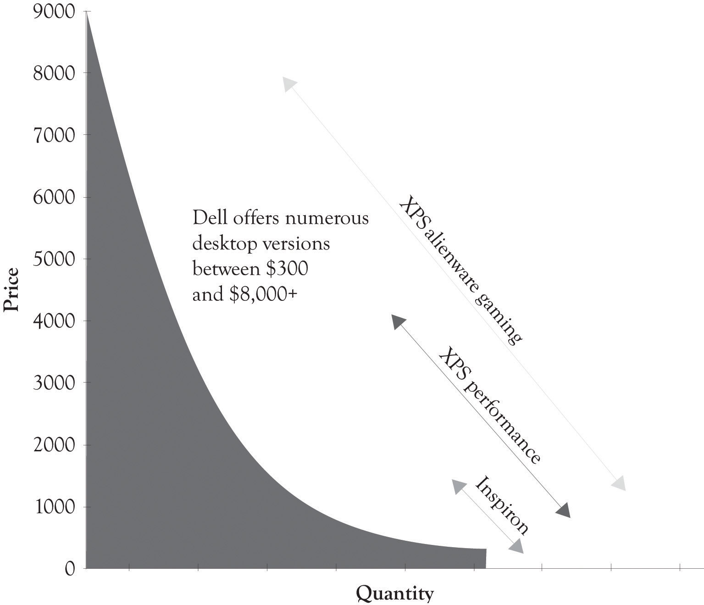

Dynamic differentiationThe ability to sell personalized, closely related—but not identical—products to consumers. is the ability to sell personalized closely related, but not identical products to consumers. In a perfectly competitive market, there are a large number of knowledgeable sellers selling a standardized product to a large number of knowledgeable consumers. In such a market, product and price differentiation is difficult, if not impossible. In such a market, it is also impossible to extract any additional money from such consumers even if you can identify how much each consumer is willing-to-pay. That is why businesses turn toward product differentiation and the monopolistic competition model. As noted before, over 99% of the approximately 23+ million businesses are involved in monopolistic competition.Slavin (2008). The king of monopolistic competition is certainly L’Enfant terrible Michael Dell and his creation, Dell.com.
Michael Dell started out with three guiding principles:
It appears that always listen to the customer is the driving force behind his model, but in reality, never selling indirectly is the engine behind the Dell model. Dell believes that the best way to listen to his customers is watch the customer select from a menu of system features and let the customer tell them what they value. This is the epitome of dynamic differentiation. By selling directly, Dell is very close to the customer and Dell can constantly adapt to subtle shifts and changes in customer preferences. Because they know what features are in greatest demand, they can move them to the high-end products. It is indeed manipulation, and a way to extract consumer surplus. And as an added benefit, Dell can carry very little inventory because they are listening to their customers and building the systems as the orders arrive.
Dell has of course adapted its model and has put more emphasis on listeneing to their customers. They are now selling products indirectly in the USA, in China, and all over the world. This is, in part, because PCs and laptops are becoming commodity products and less differentiable, but also because Dell has been listening to their current and potential customers. Some of them want the instant gratification of buying and taking it home today and some of them want to touch and feel before they buy.
At one time, Dell was more-or-less a pure pull company, just like Amazon.com. Much of their entire production system was driven by actual orders from customers. Part of their production process has also pushed products to consumers, but they are on balance a pull process company. They have been drawn toward the dark side and push production because of the demands of the marketplace. In a push production processOrders are forecasted and some products are scheduled for production based on forecasts and retailer demand rather than the end-consumer., orders are forecasted and some products are scheduled for production based on forecasts and retailer demand rather than end-consumer. This change in attitude toward selling directly also coincides with Dell’s move to sell off their manufacturing units. They are attempting to alleviate the risk inherent in manufacturing products before customers order them. The risk is of course excess inventory and Dell disdains inventory. After Dell sells their manufacturing facilities, their systems suppliers will then absorb some of the risk of carrying excess and outdated inventory.
Figure 5.5 Differentiation at Dell
Dell, because of its direct selling and the ability to install numerous features, is a prime example of dynamic differentiation. They offer literally thousands of different product configurations or versions. As illustrated in Figure 5.5 "Differentiation at Dell", Dell has feature points over a broad range of prices (these statistics approximate Dell’s line in 2011).